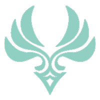
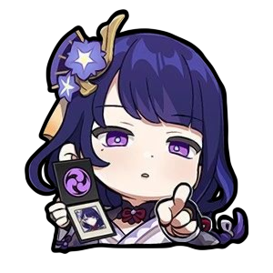

-

Barbatos
5
Descrição
Quem é Barbatos?
Barbatos, também conhecido como Lorde Barbatos ou Deus da Liberdade, é o atual Arconte Anemo dos Sete que preside Mondstadt. Ele também é um dos dois membros originais dos Sete ainda vivos. Ele atualmente vagueia pelo mundo disfarçado de mortal como o bardo Venti. -
Morax
5
Descrição
Quem é Morax?
Morax, também conhecido como o Deus dos Contratos e Rex Lapis, foi o Arconte Geo anterior e um dos Sete que presidiu Liyue. Ele também é um dos dois membros originais dos Sete que ainda estavam vivos no início do jogo. Morax forjou sua própria morte como uma forma obter sua aposentadoria, e atualmente é conhecido como Zhongli, apenas um sábio. -
Shogun
5
Descrição
Quem é a Raiden Shogun?
Shogun Raiden é a Arconde Eletro atual de Inazuma, diferente dos demais Arcondes, seu corpo é de uma marionete conhecida como Raiden Shogun, ela possui vontade vonta prória. Pois eu no entanto, sua verdadeira conciência, chamada de Ei medita eternamente dentro do Plano da Eutimia.